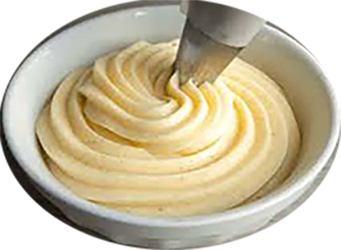

Crème mousseline

Ingrédients
- 500g de lait
- 80g jaune d’œuf
- 125g de sucre
- 20g ou 40 a voir maïsena
- 220g de beurre
- 1 gousse de vanille (facultatif)
- Arômes (facultatif) : Chocolat, Praliné, etc.
Recette
- Faire bouillir le lait avec une partie du sucre et éventuellement la gousse de vanille.
- Blanchir les jaunes d’œufs avec le sucre et la maïsena préalablement tamisée.
- Lorsque le lait bout, le verser sur le mélange précédent et bien mélanger.
- Remettre dans la casserole et sur le feu et laisser cuire en fouettant sans arrêt.
- Lorsque la crème bout, poursuivre la cuisson pendant 2min sans cesser de mélanger.
- Ajouter environ 1/3 du beurre et mélanger à nouveau.
- Filmer la crème et laisser refroidir au réfrigérateur.
- Lorsque la crème est froide, la mettre dans la cuve du batteur et bien mélanger. Ajouter si nécessaire l’arôme choisi.
- Incorporer le beurre pommade petit à petit et foisonner le mélange.
|